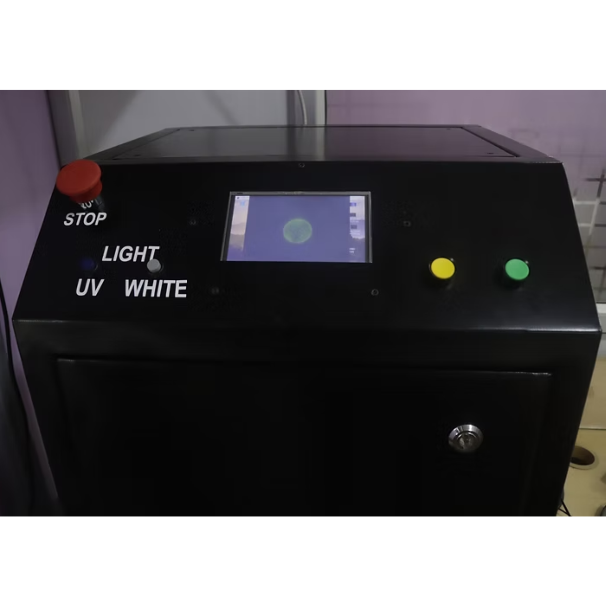
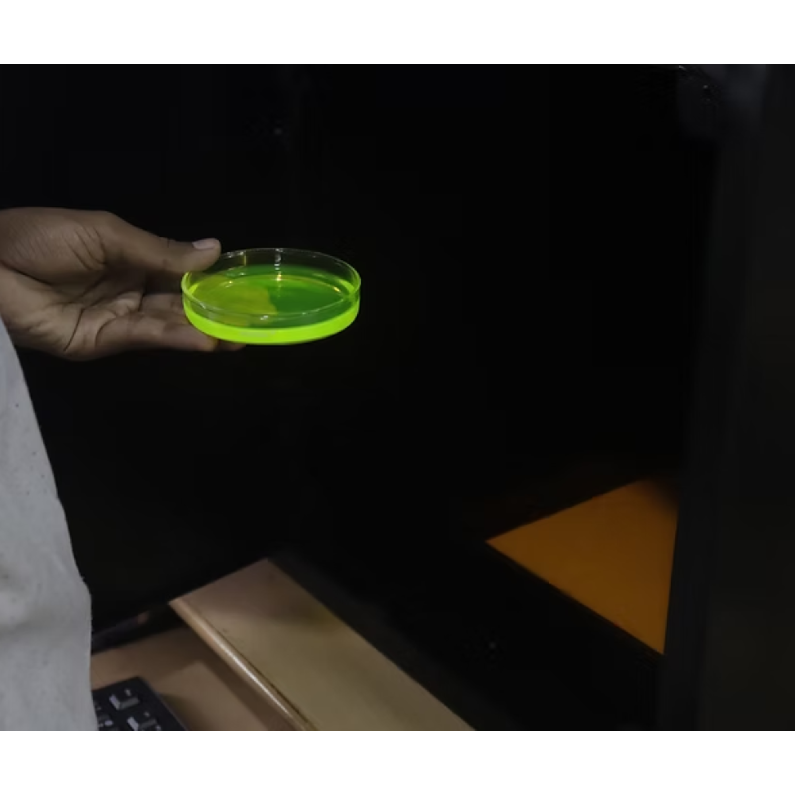

Gel Doc

A gel documentation system is a staple in molecular biology labs. It’s used to capture clear images of DNA or protein bands suspended in agarose or polyacrylamide gels after staining with dyes like ethidium bromide or GelGreen. The setup usually combines three essentials: a UV transilluminator to excite the stained molecules, a protected hood or darkroom to block ambient light and shield the user from UV exposure, and a CMOS camera to capture high-quality images.
This project was initiated by the Department of Biotechnology at SRCAS, who needed a functional and affordable gel doc for their lab workflows. I worked on the technical side along with my colleague Subash. We guided the design, helped refine the optical layout and illumination approach, and ensured the system produced clean, reliable gel images without the cost of commercial units.

The result is a practical tool that fits the department’s imaging needs and gives students and researchers a dependable way to document their gel results.